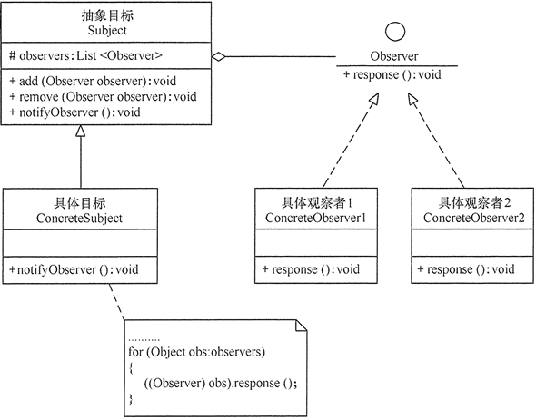

原文连接:https://www.cnblogs.com/lee0527/p/11921707.html
观察者模式
模式的定义与特点
观察者（Observer）模式的定义：指多个对象间存在一对多的依赖关系，当一个对象的状态发生改变时，所有依赖于它的对象都得到通知并被自动更新。这种模式有时又称作发布-订阅模式、模型-视图模式，它是对象行为型模式。
观察者模式是一种对象行为型模式，其主要优点如下。
- 降低了目标与观察者之间的耦合关系，两者之间是抽象耦合关系。
- 目标与观察者之间建立了一套触发机制。
它的主要缺点如下。
- 目标与观察者之间的依赖关系并没有完全解除，而且有可能出现循环引用。
- 当观察者对象很多时，通知的发布会花费很多时间，影响程序的效率。
模式的结构
实现观察者模式时要注意具体目标对象和具体观察者对象之间不能直接调用，否则将使两者之间紧密耦合起来，这违反了面向对象的设计原则。
观察者模式的主要角色如下。
- 抽象主题（Subject）角色：也叫抽象目标类，它提供了一个用于保存观察者对象的聚集类和增加、删除观察者对象的方法，以及通知所有观察者的抽象方法。
- 具体主题（Concrete Subject）角色：也叫具体目标类，它实现抽象目标中的通知方法，当具体主题的内部状态发生改变时，通知所有注册过的观察者对象。
- 抽象观察者（Observer）角色：它是一个抽象类或接口，它包含了一个更新自己的抽象方法，当接到具体主题的更改通知时被调用。
- 具体观察者（Concrete Observer）角色：实现抽象观察者中定义的抽象方法，以便在得到目标的更改通知时更新自身的状态。
观察者模式的结构图如下图所示：

模式的应用实例
利用观察者模式设计一个程序，分析“人民币汇率”的升值或贬值对进口公司的进口产品成本或出口公司的出口产品收入以及公司的利润率的影响。
分析：当“人民币汇率”升值时，进口公司的进口产品成本降低且利润率提升，出口公司的出口产品收入降低且利润率降低；当“人民币汇率”贬值时，进口公司的进口产品成本提升且利润率降低，出口公司的出口产品收入提升且利润率提升。
这里的汇率（Rate）类是抽象目标类，它包含了保存观察者（Company）的 List 和增加/删除观察者的方法，以及有关汇率改变的抽象方法 change(int number)；而人民币汇率（RMBrate）类是具体目标， 它实现了父类的 change(int number) 方法，即当人民币汇率发生改变时通过相关公司；公司（Company）类是抽象观察者，它定义了一个有关汇率反应的抽象方法 response(int number)；进口公司（ImportCompany）类和出口公司（ExportCompany）类是具体观察者类，它们实现了父类的 response(int number) 方法，即当它们接收到汇率发生改变的通知时作为相应的反应。
下图所示是其结构图：

程序代码如下
//测试类
public class RMBrateTest
{
public static void main(String[] args)
{
Rate rate=new RMBrate();
Company watcher1=new ImportCompany();
Company watcher2=new ExportCompany();
rate.add(watcher1);
rate.add(watcher2);
rate.change(10);
rate.change(-9);
}
}
//抽象目标：汇率
abstract class Rate
{
protected List<Company> companys=new ArrayList<Company>();
//增加观察者方法
public void add(Company company)
{
companys.add(company);
}
//删除观察者方法
public void remove(Company company)
{
companys.remove(company);
}
public abstract void change(int number);
}
//具体目标：人民币汇率
class RMBrate extends Rate
{
public void change(int number)
{
for(Company obs:companys)
{
((Company)obs).response(number);
}
}
}
//抽象观察者：公司
interface Company
{
void response(int number);
}
//具体观察者1：进口公司
class ImportCompany implements Company
{
public void response(int number)
{
if(number>0)
{
System.out.println("人民币汇率升值"+number+"个基点，降低了进口产品成本，提升了进口公司利润率。");
}
else if(number<0)
{
System.out.println("人民币汇率贬值"+(-number)+"个基点，提升了进口产品成本，降低了进口公司利润率。");
}
}
}
//具体观察者2：出口公司
class ExportCompany implements Company
{
public void response(int number)
{
if(number>0)
{
System.out.println("人民币汇率升值"+number+"个基点，降低了出口产品收入，降低了出口公司的销售利润率。");
}
else if(number<0)
{
System.out.println("人民币汇率贬值"+(-number)+"个基点，提升了出口产品收入，提升了出口公司的销售利润率。");
}
}
}模式的应用场景
通过前面的分析与应用实例可知观察者模式适合以下几种情形。
- 对象间存在一对多关系，一个对象的状态发生改变会影响其他对象。
- 当一个抽象模型有两个方面，其中一个方面依赖于另一方面时，可将这二者封装在独立的对象中以使它们可以各自独立地改变和复用。